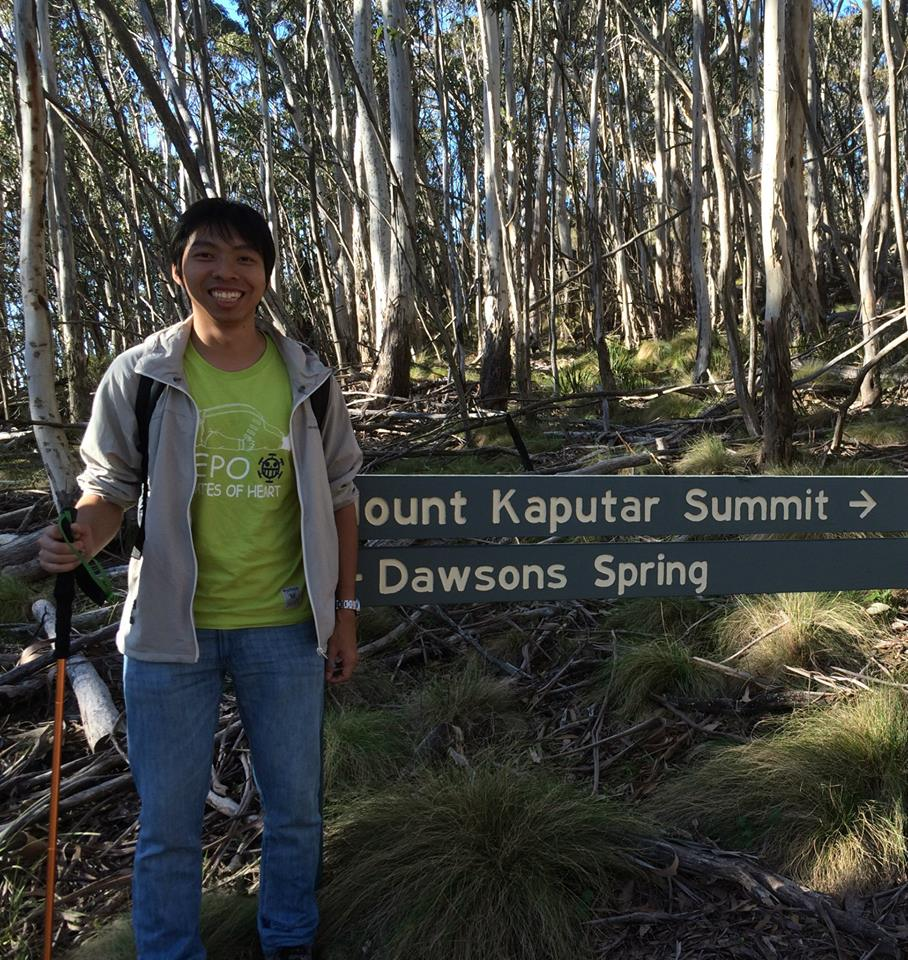

About Me
Hello everyone visting this page. The picture above is taken during a hiking trip in CASS Radio School in 2014 Summer (Spring at there I guess). I born and grow up in Hong Kong.
What inspired me to study physics?
I loved to read books about Physics at my teenage, and my results in Physics is stong compared to other subject during my high school. When I chose degree after my graduation from high school, I through that Bio-chemistry is a popular subject so I wished to take bio-chem at that time. I am enrolled in the Bachelor of Science degree in the University of Hong Kong in 2007. The Faculty Admission policy provides students with a choice of 15 Science majors freely. At that time, I chose to study Bio-chemistry as my major and Physics as my minor at that time.
However, I am not capable to study bio-chem well as it requires lots of memorizing works. At last, I finished my Physics major after 3-year of Univrsity life and graduated in the year 2010. And I have NO regard for my choice of Physics study :).
What do I study PhD in Astronomy?
What do I do during working days?

And with a coffee fusion cycle (not carbon fusion cycle): Instant coffee ==> working ==> facebook ==> youtube ==> working ==> lunch